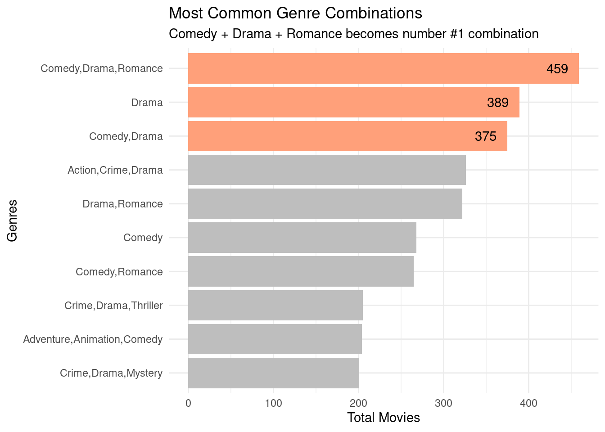
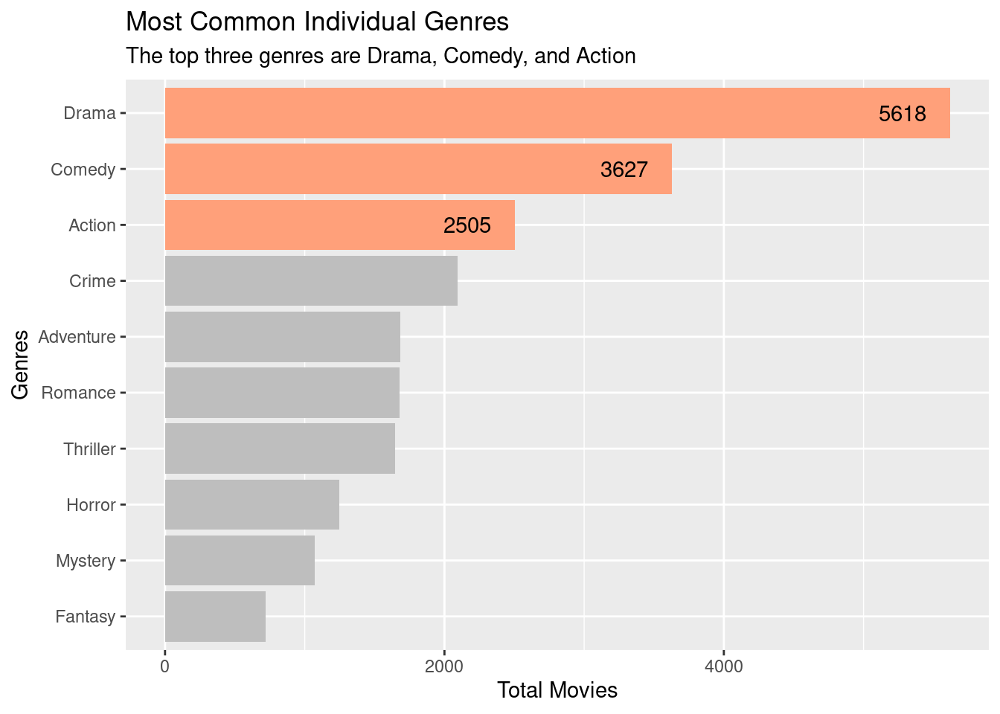

Analyzing Top 10.000 Most Popular Movies on IMDb
Project
SQL
R
Finding the common characteristics among Top 10.000 movies of all time
Executive Summary
Objective
The goal of this analysis is to find common characteristics among the most popular movies. These characteristics would be helpful to potential movie producers who want to identify trends and patterns that contribute to a film’s success.
Methodology
Data Collection
The data was collected from the IMDb Non-Commercial Dataset, which is freely available to the public.
Data Cleaning
The dataset is given as a list of .tsv files. To process that, I set up a local SQLite database with appropriate tables and imported the .tsv into them.
The dataset contains a comprehensive amount of data, with a total of 39 columns that are spread across 7 tables. For this analysis, I selected 2 tables that are most relevant and joined them together: title.basics and title.ratings.
To get the most popular movies, I sorted the movies in descending order based on the number of votes, as it should be positively correlated with the amount of people that watched the movie.
Finally, I took the top 10.000 rows and exported them into a .csv file.
The csv file is then loaded into R to check for data quality and for further analysis. The data is already clean. The data reflects what the live site shows, with 0.01% null values, no duplicates, no misspellings, and so on.
Data Analysis
The analysis is also performed using R in RStudio, with the help of tidyverse libraries such as dplyr and ggplot2. The majority of the analysis is identifying relationships among the number of votes and the potential key variables using statistics and visualization.
Results
Most Common Movie Duration
The most popular movies have moderate duration, which is 80-120 minutes, and very few of them are below 80 minutes. This suggests that most audience prefer movies with long enough duration to build depth, characters, plots, and other aspects; But not too long.
Most Common Genre Combinations

Each movie can have multiple genres. The most popular ones are the one that has Drama, Comedy, and Romance altogether. This suggests that audience prefer movies that are easy to relate.
Most Common Genres

If we count each genre separately, we’ll see that Drama dominated the genre competition across top 10.000 movies. A possible explanation is because it’s one of the most flexible element. It can be applied to any kind of movies, and will relate to anyone across times and cultures.
Recommendations
Aim for a movie duration between 80-120 minutes: The data shows that 73% of the most popular movies fall within this range. This suggests audiences prefer movies of moderate length.
Focus on key genre combinations: Consider producing movies that combine Comedy, Drama, and Romance, as this was the most common genre combination. Alternatively, pure Drama movies or Comedy-Drama combinations were also highly popular.
Prioritize Drama, Comedy, and Action genres: When considering individual genres, these three were the most common among popular movies. Producers might want to ensure their projects incorporate at least one of these genres.